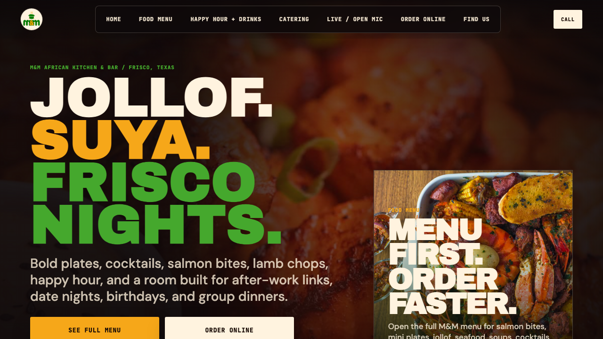

Access packet
Current setup. Access points. Next decisions.
A tight owner packet for the live site, the shared review tools, and the remaining approvals.
The goal here is not more explanation. It is one clean place to see what is live, what still needs access, and what gets reviewed next.
What is live
Public websitemmafricankitchen.com is already running.Needs access
Redirect + profile accessOld-page control and remaining profile updates are still pending.Next move
Owner nextReview the tools below, then approve the remaining access items.
Live site proofThe current public site is already running. The remaining work is continuity, access, and public profile alignment.
Current status
- The current public site is already live.
- The review path should stay simple.
- What remains: access, profile updates, and redirect cleanup.
- Sensitive logins should stay in live access only.
Access map
Where to check
These are the only tools that matter for the owner review path right now.
Tool
Why it matters
Current state
Owner action
Used for domain continuity and transition control.
Pending
Open live access when ready.
Old-page redirect
Moves old traffic cleanly to the live site.
Pending
Provide admin or collaborator access.
Sensitive credentials stay in live login only. No passwords, recovery codes, or payment details should be sent in chat.
Immediate owner actions
What we need next
- Update Google Business Profile.
- Update Instagram, Facebook, and any active listing still using the old page.
- Open the old-page redirect path.
- Confirm which business accounts are still active now.
Weekly review
What gets checked
- Site changes that went live
- Completed requests
- Blocked items waiting on access or approval
Month end
What gets summarized
- What shipped
- What still needs access
- What next month should focus on